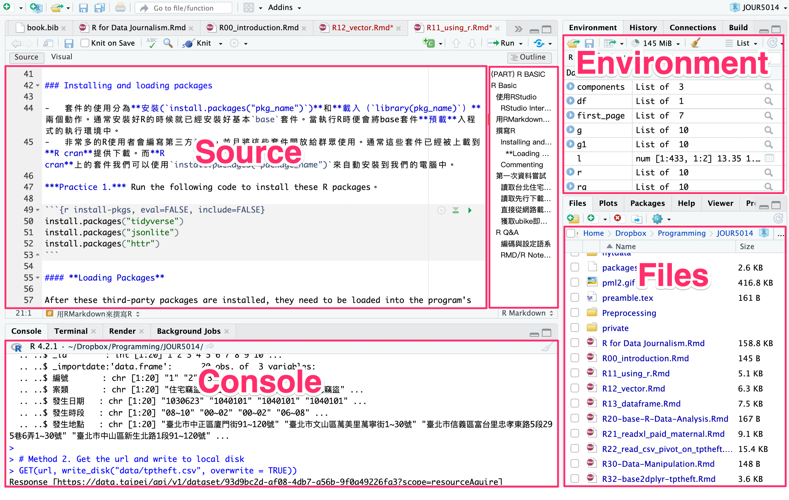

Chapter 2 R Basic
The chapter introduces how to use RStudio to write and execute R programming language. It will also briefly introduce the basic syntax of R, as well as the vector and data.frame data types.
2.1 使用RStudio
2.1.1 RStudio介面簡介
RStudio的介面主要分為四大區塊，左上的區塊是「Source」（或現在可切換至「Visual」）是撰寫程式碼與R Markdown的區塊；每行程式碼的執行和執行結果都會出現在左下「Console」的區塊；右上角區塊最常用的是「Environment」這個分頁，程式碼執行過程產生的變數／變項都會出現在這裡。右下角區塊我最常用的是「Files」這個分頁，顯示的是我自己電腦本機端的檔案目錄。右下角區塊也常常用到「Packages」，可查閱現在的程式執行環境有載入哪些套件；當用help(some_function)查詢某個套件或某個函式的功能是，就會自動跳到「Help」分頁。

2.1.2 用RMarkdown來撰寫R
R Markdown這種格式讓程式寫作者可以將程式碼和非程式碼的內容寫在同一份文件中。例如我想要寫作一本關於程式的書，裡面有很多的程式碼，但也要有很多說明、章節與段落。此時，這些非程式碼的區塊通常被稱為「Text Cell」，而程式碼的區塊就稱為「Code Cell」。尤其是資料分析師或資料科學家很愛用這種格式，因為經常要為程式的執行結果寫很多說明，甚至利用標題一、標題二來區分章節。
R Markdown格式，顧名思義，支援用Markdown這種標記語法來快速撰寫如標題一、標題二、點列、編號等格式化文字。詳細指令可以參考rmarkdown-cheatsheet (rstudio.com)。
2.1.3 撰寫R
Now try to run the following code with these keyboard operations:
- Using
Cmd+Enter(Ctrl+Enterin Window) to execute the line where your cursor is located. - Using
Cmd(Ctrl)+Shift+Enterto run all code in a cell - Using mouse to select multiple lines, then
Cmd(Ctrl)+Shift+cto comment/un-comment multiple lines. - Using
Cmd(Ctrl)+Option(Alt)+ito insert a new cell
a <- c(1, 2, 3, 4, 5)
b <- 4
a*b## [1] 4 8 12 16 202.1.4 安裝並載入第三方套件
- 套件的使用分為安裝(
install.packages("pkg_name"))和載入（library(pkg_name)）兩個動作。通常安裝好R的時候就已經安裝好基本base套件。當執行R時便會將base套件預載入程式的執行環境中。 - 非常多的R使用者會編寫第三方套件，並且將這些套件開放給群眾使用。通常這些套件已經被上載到R cran提供下載。而R cran上的套件我們可以使用
install.packages("package_name")來自動安裝到我們的電腦中。
Practice 1. Run the following code to install these R packages。
2.2 第一次資料嘗試
2.2.1 讀取台北住宅竊盜點位資料
- Go to data.taipei
- Make a query “住宅竊盜”
- Open “住宅竊盜點位資訊”
- Click “API”
- Copy the API address and assign to url
2.2.2 讀取先行下載的csv檔
df <- read.csv("data/tptheft.csv")
head(df)| X.result..limit.20 | offset.0 | count.3513 | sort. | results…_id.1 | X_importdate..date.2023.01.09.10.04.19.270425 | timezone_type.3 | timezone.Asia..Taipei. | 編號.1 | 案類.住宅竊盜 | 發生日期.1030623 | 發生時段.08.10 | 發生地點.臺北市中正區廈門街91.120號. | X._id.2 | X_importdate..date.2023.01.09.10.04.19.280318 | timezone_type.3.1 | timezone.Asia..Taipei..1 | 編號.2 | 案類.住宅竊盜.1 | 發生日期.1040101 | 發生時段.00.02 | 發生地點.臺北市文山區萬美里萬寧街1.30號. | X._id.3 | X_importdate..date.2023.01.09.10.04.19.281881 | timezone_type.3.2 | timezone.Asia..Taipei..2 | 編號.3 | 案類.住宅竊盜.2 | 發生日期.1040101.1 | 發生時段.00.02.1 | 發生地點.臺北市信義區富台里忠孝東路5段295巷6弄1.30號. | X._id.4 | X_importdate..date.2023.01.09.10.04.19.283264 | timezone_type.3.3 | timezone.Asia..Taipei..3 | 編號.4 | 案類.住宅竊盜.3 | 發生日期.1040101.2 | 發生時段.06.08 | 發生地點.臺北市中山區新生北路1段91.120號. | X._id.5 | X_importdate..date.2023.01.09.10.04.19.284529 | timezone_type.3.4 | timezone.Asia..Taipei..4 | 編號.5 | 案類.住宅竊盜.4 | 發生日期.1040101.3 | 發生時段.10.12 | 發生地點.臺北市文山區明興里興隆路4段1.30號. | X._id.6 | X_importdate..date.2023.01.09.10.04.19.285693 | timezone_type.3.5 | timezone.Asia..Taipei..5 | 編號.6 | 案類.住宅竊盜.5 | 發生日期.1040102 | 發生時段.00.02.2 | 發生地點.臺北市士林區天福里1鄰忠誠路2段130巷1.30號. | X._id.7 | X_importdate..date.2023.01.09.10.04.19.287055 | timezone_type.3.6 | timezone.Asia..Taipei..6 | 編號.7 | 案類.住宅竊盜.6 | 發生日期.1040102.1 | 發生時段.06.08.1 | 發生地點.臺北市萬華區糖.里大理街159巷1.30號. | X._id.8 | X_importdate..date.2023.01.09.10.04.19.288206 | timezone_type.3.7 | timezone.Asia..Taipei..7 | 編號.8 | 案類.住宅竊盜.7 | 發生日期.1040102.2 | 發生時段.06.08.2 | 發生地點.臺北市萬華區糖.里大理街159巷1.30號..1 | X._id.9 | X_importdate..date.2023.01.09.10.04.19.289253 | timezone_type.3.8 | timezone.Asia..Taipei..8 | 編號.9 | 案類.住宅竊盜.8 | 發生日期.1040102.3 | 發生時段.10.12.1 | 發生地點.臺北市中山區吉林路121.150號. | X._id.10 | X_importdate..date.2023.01.09.10.04.19.290610 | timezone_type.3.9 | timezone.Asia..Taipei..9 | 編號.10 | 案類.住宅竊盜.9 | 發生日期.1040104 | 發生時段.10.12.2 | 發生地點.臺北市信義區五常里永吉路225巷32弄1.30號. | X._id.11 | X_importdate..date.2023.01.09.10.04.19.291912 | timezone_type.3.10 | timezone.Asia..Taipei..10 | 編號.11 | 案類.住宅竊盜.10 | 發生日期.1040104.1 | 發生時段.12.14 | 發生地點.臺北市士林區明勝里通河街31.60號. | X._id.12 | X_importdate..date.2023.01.09.10.04.19.293083 | timezone_type.3.11 | timezone.Asia..Taipei..11 | 編號.12 | 案類.住宅竊盜.11 | 發生日期.1040105 | 發生時段.00.02.3 | 發生地點.臺北市中山區南京東路3段181.210號. | X._id.13 | X_importdate..date.2023.01.09.10.04.19.294598 | timezone_type.3.12 | timezone.Asia..Taipei..12 | 編號.13 | 案類.住宅竊盜.12 | 發生日期.1040105.1 | 發生時段.04.06 | 發生地點.臺北市萬華區大理街159巷1.30號. | X._id.14 | X_importdate..date.2023.01.09.10.04.19.295851 | timezone_type.3.13 | timezone.Asia..Taipei..13 | 編號.14 | 案類.住宅竊盜.13 | 發生日期.1040105.2 | 發生時段.04.06.1 | 發生地點.臺北市萬華區糖.里大理街159巷1.30號..2 | X._id.15 | X_importdate..date.2023.01.09.10.04.19.297172 | timezone_type.3.14 | timezone.Asia..Taipei..14 | 編號.15 | 案類.住宅竊盜.14 | 發生日期.1040105.3 | 發生時段.12.14.1 | 發生地點.臺北市北投區吉慶里實踐街56巷1.30號. | X._id.16 | X_importdate..date.2023.01.09.10.04.19.298608 | timezone_type.3.15 | timezone.Asia..Taipei..15 | 編號.16 | 案類.住宅竊盜.15 | 發生日期.1040105.4 | 發生時段.16.18 | 發生地點.臺北市中正區忠勤里中華路2段311巷1.30號. | X._id.17 | X_importdate..date.2023.01.09.10.04.19.299840 | timezone_type.3.16 | timezone.Asia..Taipei..16 | 編號.17 | 案類.住宅竊盜.16 | 發生日期.1040105.5 | 發生時段.18.20 | 發生地點.臺北市文山區興福里12鄰景華街61.90號. | X._id.18 | X_importdate..date.2023.01.09.10.04.19.301096 | timezone_type.3.17 | timezone.Asia..Taipei..17 | 編號.18 | 案類.住宅竊盜.17 | 發生日期.1040106 | 發生時段.04.06.2 | 發生地點.臺北市信義區雅祥里基隆路1段1.30號. | X._id.19 | X_importdate..date.2023.01.09.10.04.19.302420 | timezone_type.3.18 | timezone.Asia..Taipei..18 | 編號.19 | 案類.住宅竊盜.18 | 發生日期.1040106.1 | 發生時段.16.18.1 | 發生地點.臺北市中正區水源里汀州路3段91.120號. | X._id.20 | X_importdate..date.2023.01.09.10.04.19.303669 | timezone_type.3.19 | timezone.Asia..Taipei..19 | 編號.20 | 案類.住宅竊盜.19 | 發生日期.1040107 | 發生時段.16.18.2 | 發生地點.臺北市文山區萬芳里萬芳路31.60號…. |
|---|---|---|---|---|---|---|---|---|---|---|---|---|---|---|---|---|---|---|---|---|---|---|---|---|---|---|---|---|---|---|---|---|---|---|---|---|---|---|---|---|---|---|---|---|---|---|---|---|---|---|---|---|---|---|---|---|---|---|---|---|---|---|---|---|---|---|---|---|---|---|---|---|---|---|---|---|---|---|---|---|---|---|---|---|---|---|---|---|---|---|---|---|---|---|---|---|---|---|---|---|---|---|---|---|---|---|---|---|---|---|---|---|---|---|---|---|---|---|---|---|---|---|---|---|---|---|---|---|---|---|---|---|---|---|---|---|---|---|---|---|---|---|---|---|---|---|---|---|---|---|---|---|---|---|---|---|---|---|---|---|---|---|---|---|---|---|---|---|---|---|---|---|---|---|---|---|---|---|---|---|---|---|---|
2.2.3 直接從網路載入內政部開放資料
library(httr)
library(jsonlite)
url <- "https://www.ris.gov.tw/rs-opendata/api/v1/datastore/ODRP024/107?page=1"
first_page <- fromJSON(content(GET(url), "text"))
head(first_page$responseData) %>% rename(戶長=headhousehold_count)| statistic_yyy | district_code | site_id | village | edu | sex | 戶長 |
|---|---|---|---|---|---|---|
| 107 | 65000010001 | 新北市板橋區 | 留侯里 | 博畢 | 男 | 3 |
| 107 | 65000010001 | 新北市板橋區 | 留侯里 | 碩畢 | 男 | 26 |
| 107 | 65000010001 | 新北市板橋區 | 留侯里 | 大畢 | 男 | 71 |
| 107 | 65000010001 | 新北市板橋區 | 留侯里 | 專畢 | 男 | 52 |
| 107 | 65000010001 | 新北市板橋區 | 留侯里 | 高中畢 | 男 | 122 |
| 107 | 65000010001 | 新北市板橋區 | 留侯里 | 國中畢 | 男 | 40 |
2.2.4 獲取ubike即時資料
url <- "https://tcgbusfs.blob.core.windows.net/blobyoubike/YouBikeTP.json"
ubike.list <- fromJSON(content(GET(url),"text", encoding = "utf-8"))
ubike.v <- unlist(ubike.list$retVal)
ubike.m <- matrix(ubike.v, byrow = T, ncol = 14)
ubike.df <- as.data.frame(ubike.m)
names(ubike.df) <- names(ubike.list$retVal$`0001`)
head(ubike.df) %>% select(1:6)| sno | sna | tot | sbi | sarea | mday |
|---|---|---|---|---|---|
| 0001 | 捷運市政府站(3號出口) | 88 | 71 | 信義區 | 20221014150033 |
| 0002 | 捷運國父紀念館站(2號出口) | 16 | 6 | 大安區 | 20221014150018 |
| 0004 | 市民廣場 | 32 | 32 | 信義區 | 20221014150038 |
| 0005 | 興雅國中 | 32 | 20 | 信義區 | 20221014150027 |
| 0006 | 臺北南山廣場 | 54 | 19 | 信義區 | 20221014150015 |
| 0007 | 信義廣場(台北101) | 40 | 20 | 信義區 | 20221014150043 |
2.3 R Q&A
2.3.1 編碼與設定語系
Sys.setlocale(category = "LC_ALL", locale = "UTF-8")
Sys.setlocale(category = "LC_ALL", locale = "cht")如果讀取到資料有中文的話，此時，你只需要指定locale為cht，然後重開該data.frame就可以解決該問題。
Sys.setlocale(category = "LC_ALL", locale = "cht")但你在寫程式剖析HTML時若使用了rvest這個套件，有可能在html_node()函式時會因為編碼而產生問題，此時你會需要把locale改為C。這個C指的是C語言的C。
Sys.setlocale(category = "LC_ALL", locale = "C")參考連結：http://psmethods.postach.io/post/ru-he-geng-gai-rde-yu-she-yu-xi
參考連結：https://stat.ethz.ch/R-manual/R-devel/library/base/html/locales.html
The locale describes aspects of the internationalization of a program. Initially most aspects of the locale of R are set to “C” (which is the default for the C language and reflects North-American usage)